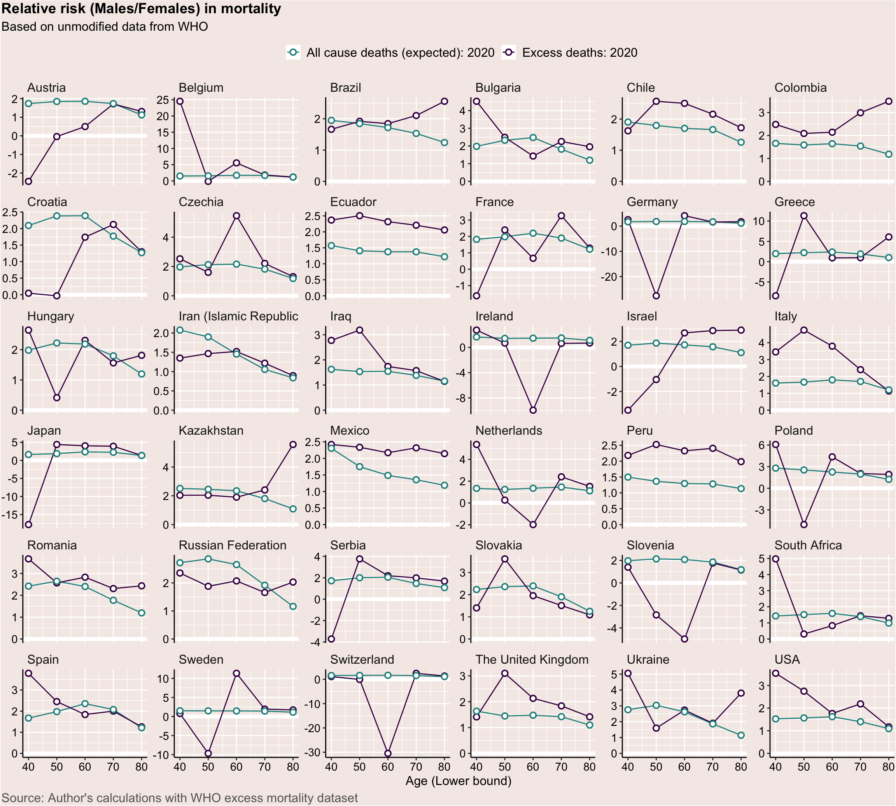
Age-sex patterns of COVID mortality across countries
Introduction
This paper seeks to understand how mortality risks from COVID for men and women differ by age, and how gender differences in mortality risk from COVID compare to gender differences in mortality risks from all-causes.
Data
This analyses in this paper use global excess deaths associated with COVID-19 (modeled estimates) produced by the Technical Advisory Group (TAG) on COVID-19 mortality assessment. Estimates of expected all-cause deaths (baseline), actual cause deaths and excess deaths are provided by country and 7 age groups: 0-25, 25-39, 40-49, 50-59, 60-69, 70-79 and 80+.
Out of 194 countries in the WHO database, only 35 countries (18 percent, mostly from Europe) have excess death estimates based on reported all-cause death records disaggregated by gender for both 2020 and 2021. 53 countries have reported all-cause death data for both sexes combined for both 2020 and 2021. For nearly all lower -middle- and low-income countries, all-cause deaths are predicted.
Inclusion criteria for this analysis are as follows:
- Age groups at or above 40 years of age
- Countries with a total population of at least 1m
- Countries with a cumulative official COVID-19 death toll of at least 2000 deaths at the end of 2020
- Countries with reported all-cause data disaggregated by age and sex in 2020
- The following 36 countries are included in this analysis: Austria, Belgium, Bulgaria, Brazil, Switzerland, Chile, Colombia, Czechia, Germany, Ecuador, Spain, France, The United Kingdom, Greece, Croatia, Hungary, Ireland, Iran (Islamic Republic of), Iraq, Israel, Italy, Japan, Kazakhstan, Mexico, Netherlands, Peru, Poland, Romania, Russian Federation, Serbia, Slovakia, Slovenia, Sweden, Ukraine, USA, South Africa
Results
Sex-ratio in mortality (all-cause and excess in 2020): Observations
Age-adjusted poisson model (with interaction)

Relationship between predicted sex-differences in mortality and country income
All available data (composition of countries changes in 2021)

Keeping composition of countries constant (only countries with all cause deaths disaggregate by gender in 2020 & 2021)

Annex
By country
The following set of figures display observed and predicted values of mortality rates, the sex-ratio of mortality rates (males/females) and the sex-gap of mortality rates (males - females) by age, for each country in the analysis dataset.
Austria
- Total population: 9,006,400
- Total official COVID deaths in 2020 (Our World in Data): 7,380
- Total official COVID deaths in 2021 (Our World in Data): 9,303
- Total excess deaths in 2020 (WHO): 6,536
- Total excess deaths in 2021 (WHO): 5,405
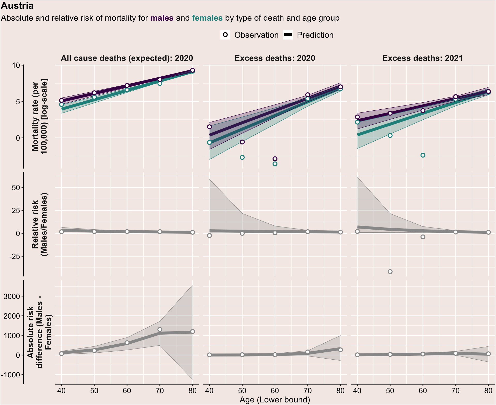
Belgium
- Total population: 11,589,616
- Total official COVID deaths in 2020 (Our World in Data): 19,674
- Total official COVID deaths in 2021 (Our World in Data): 8,682
- Total excess deaths in 2020 (WHO): 16,968
- Total excess deaths in 2021 (WHO): 951
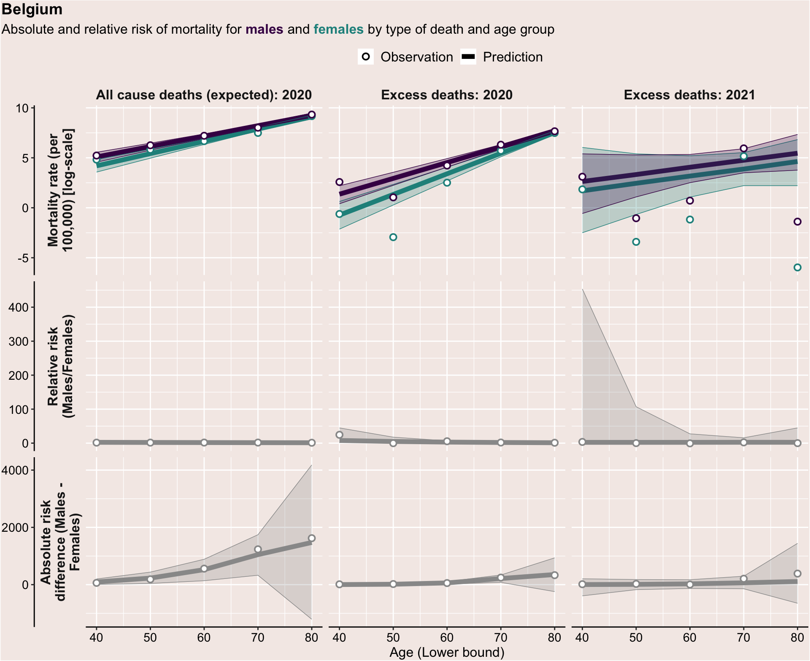
Bulgaria
- Total population: 6,948,445
- Total official COVID deaths in 2020 (Our World in Data): 7,515
- Total official COVID deaths in 2021 (Our World in Data): 23,375
- Total excess deaths in 2020 (WHO): 16,880
- Total excess deaths in 2021 (WHO): 40,615

Brazil
- Total population: 212,559,409
- Total official COVID deaths in 2020 (Our World in Data): 192,681
- Total official COVID deaths in 2021 (Our World in Data): 426,136
- Total excess deaths in 2020 (WHO): 210,810
- Total excess deaths in 2021 (WHO):
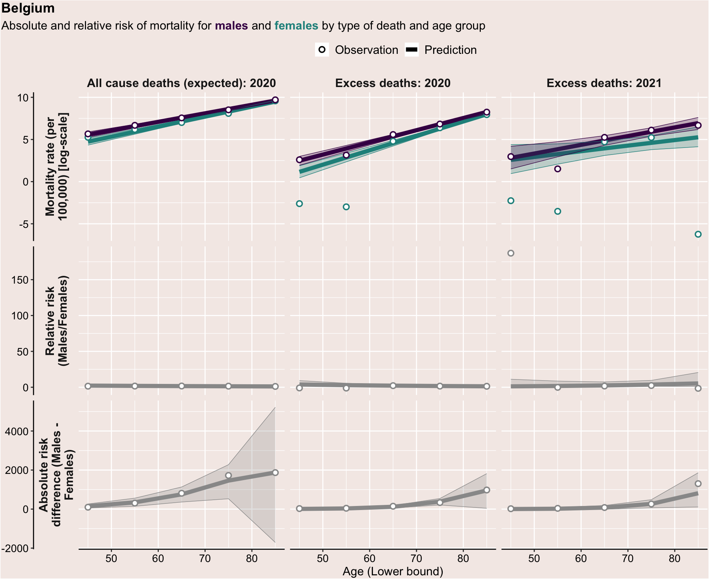
Switzerland
- Total population: 8,654,618
- Total official COVID deaths in 2020 (Our World in Data): 7,528
- Total official COVID deaths in 2021 (Our World in Data): 4,393
- Total excess deaths in 2020 (WHO): 7,540
- Total excess deaths in 2021 (WHO): 707
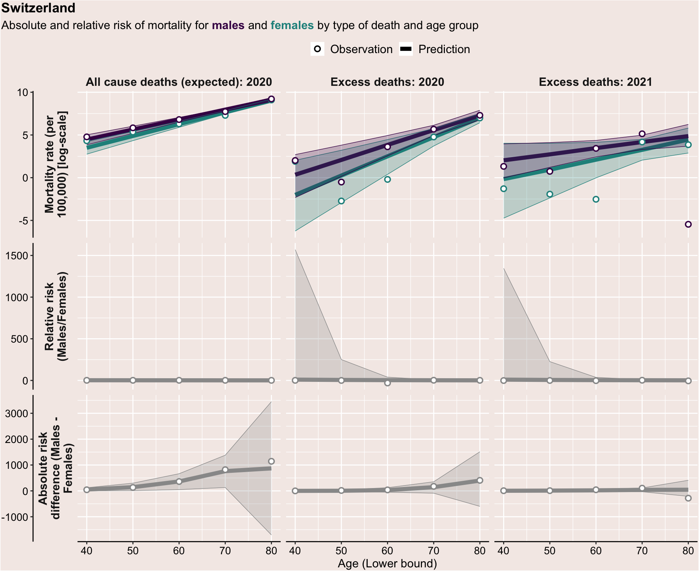
Chile
- Total population: 19,116,209
- Total official COVID deaths in 2020 (Our World in Data): 16,499
- Total official COVID deaths in 2021 (Our World in Data): 22,597
- Total excess deaths in 2020 (WHO): 14,577
- Total excess deaths in 2021 (WHO): 24,121
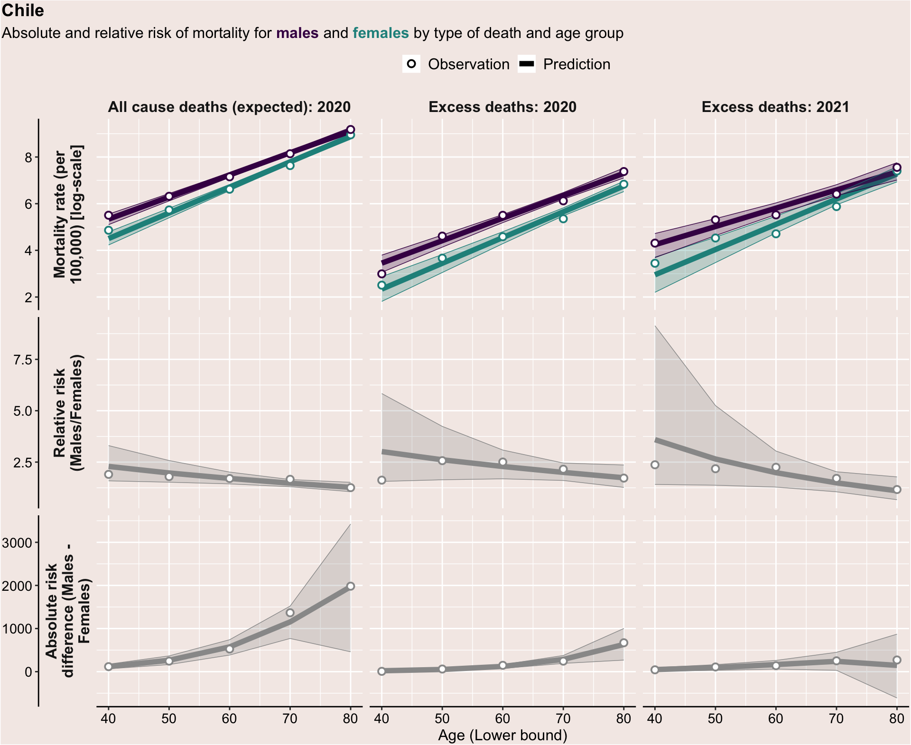
Colombia
- Total population: 50,882,884
- Total official COVID deaths in 2020 (Our World in Data): 42,620
- Total official COVID deaths in 2021 (Our World in Data): 87,246
- Total excess deaths in 2020 (WHO): 54,062
- Total excess deaths in 2021 (WHO):
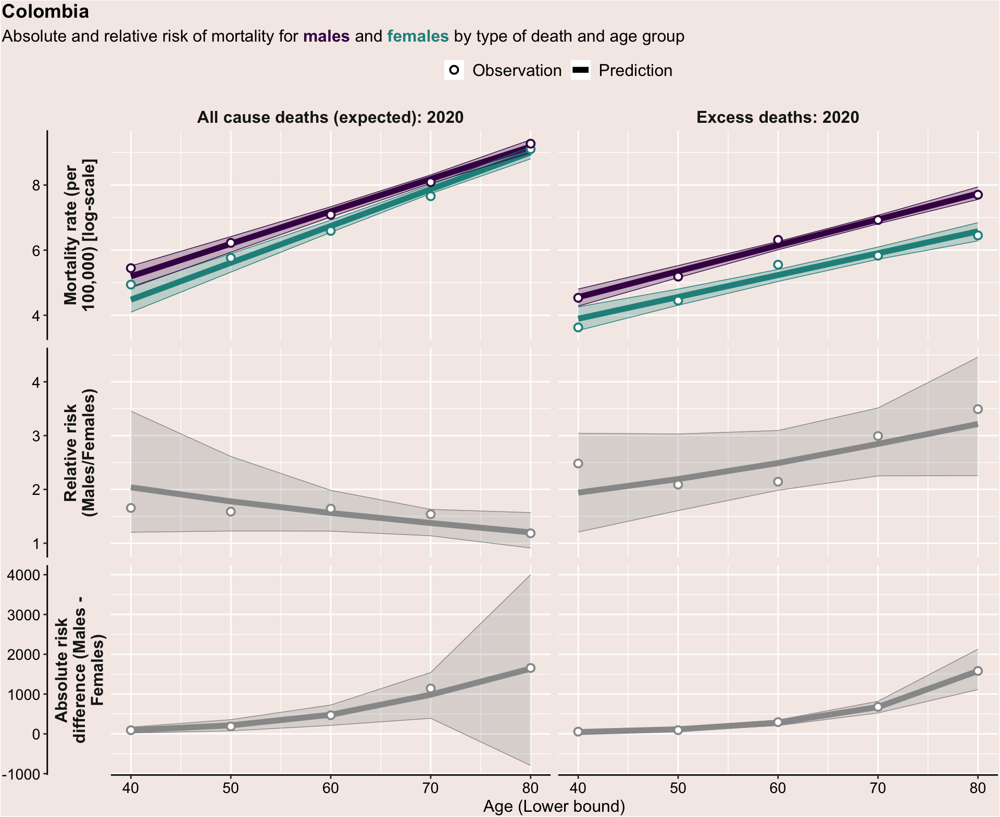
Czechia
- Total population: 10,708,982
- Total official COVID deaths in 2020 (Our World in Data): 11,888
- Total official COVID deaths in 2021 (Our World in Data): 24,443
- Total excess deaths in 2020 (WHO): 13,450
- Total excess deaths in 2021 (WHO): 23,590

Germany
- Total population: 83,783,945
- Total official COVID deaths in 2020 (Our World in Data): 50,442
- Total official COVID deaths in 2021 (Our World in Data): 67,991
- Total excess deaths in 2020 (WHO): 66,793
- Total excess deaths in 2021 (WHO): 128,194
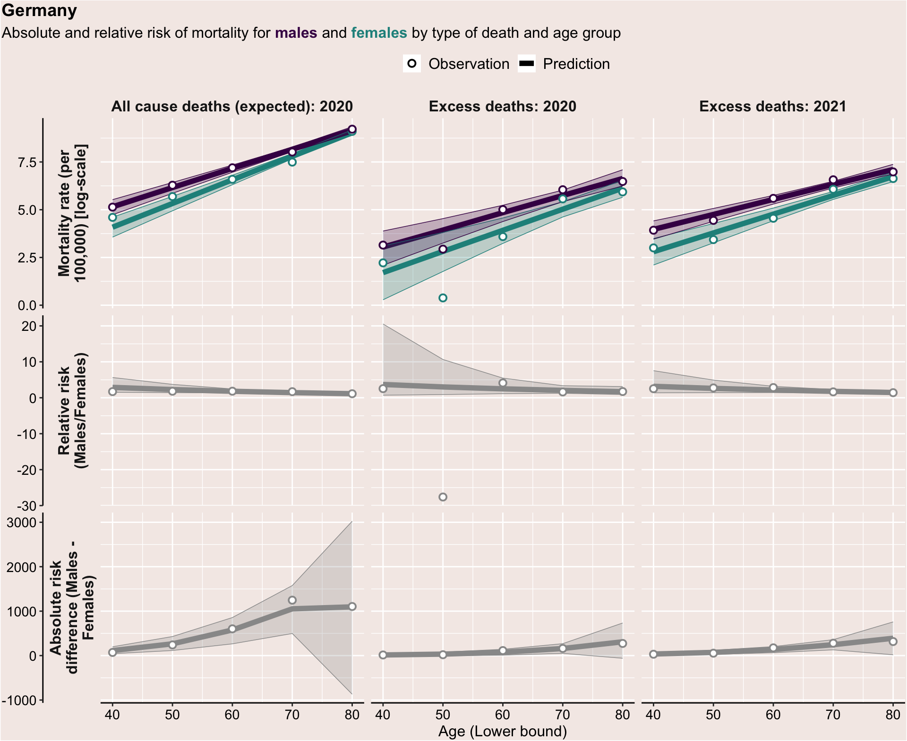
Ecuador
- Total population: 17,643,060
- Total official COVID deaths in 2020 (Our World in Data): 14,023
- Total official COVID deaths in 2021 (Our World in Data): 19,646
- Total excess deaths in 2020 (WHO): 46,402
- Total excess deaths in 2021 (WHO):
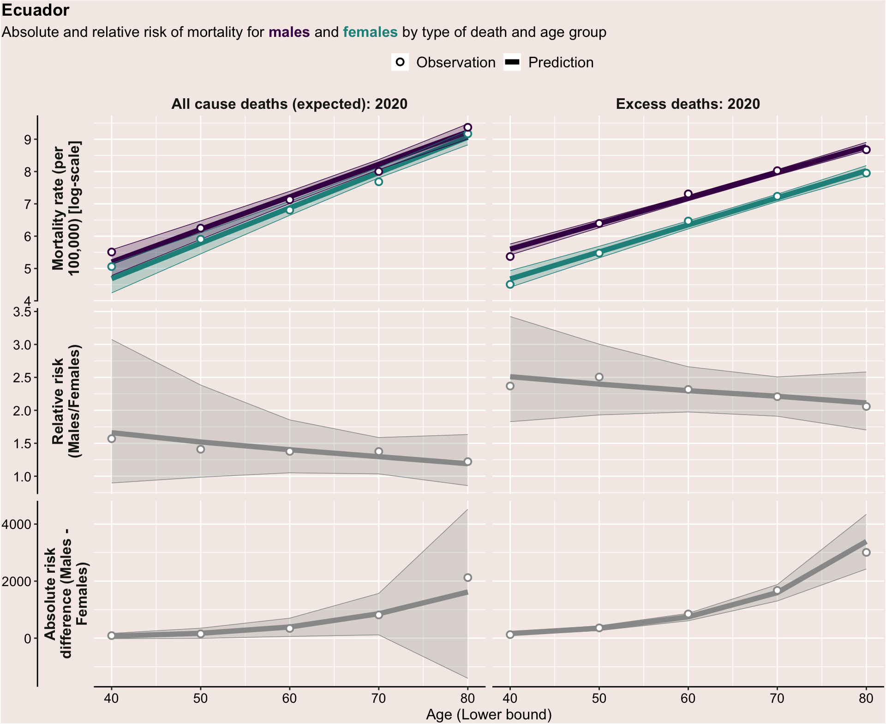
Spain
- Total population: 46,754,783
- Total official COVID deaths in 2020 (Our World in Data): 54,459
- Total official COVID deaths in 2021 (Our World in Data): 37,229
- Total excess deaths in 2020 (WHO): 72,574
- Total excess deaths in 2021 (WHO): 31,361

France
- Total population: 65,273,512
- Total official COVID deaths in 2020 (Our World in Data): 64,004
- Total official COVID deaths in 2021 (Our World in Data): 56,958
- Total excess deaths in 2020 (WHO): 49,178
- Total excess deaths in 2021 (WHO): 32,671

The United Kingdom
- Total population: 67,886,004
- Total official COVID deaths in 2020 (Our World in Data): 75,239
- Total official COVID deaths in 2021 (Our World in Data): 74,688
- Total excess deaths in 2020 (WHO): 85,504
- Total excess deaths in 2021 (WHO): 63,392
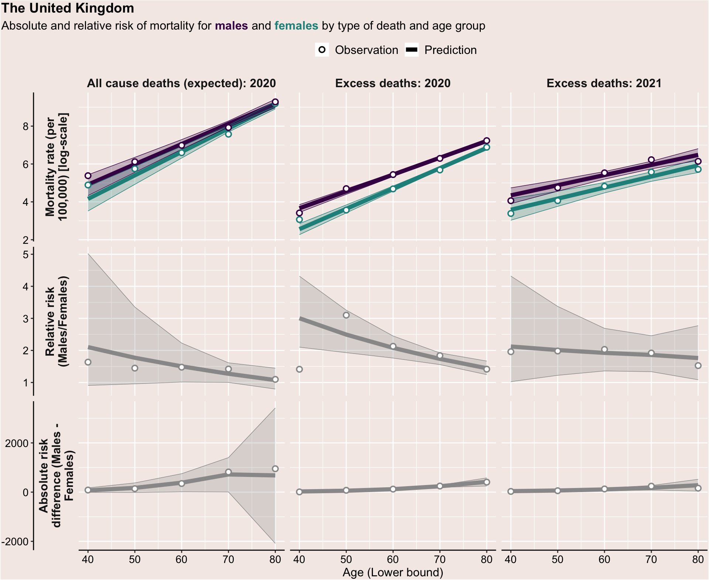
Greece
- Total population: 10,423,056
- Total official COVID deaths in 2020 (Our World in Data): 4,788
- Total official COVID deaths in 2021 (Our World in Data): 15,920
- Total excess deaths in 2020 (WHO): 4,043
- Total excess deaths in 2021 (WHO): 15,351
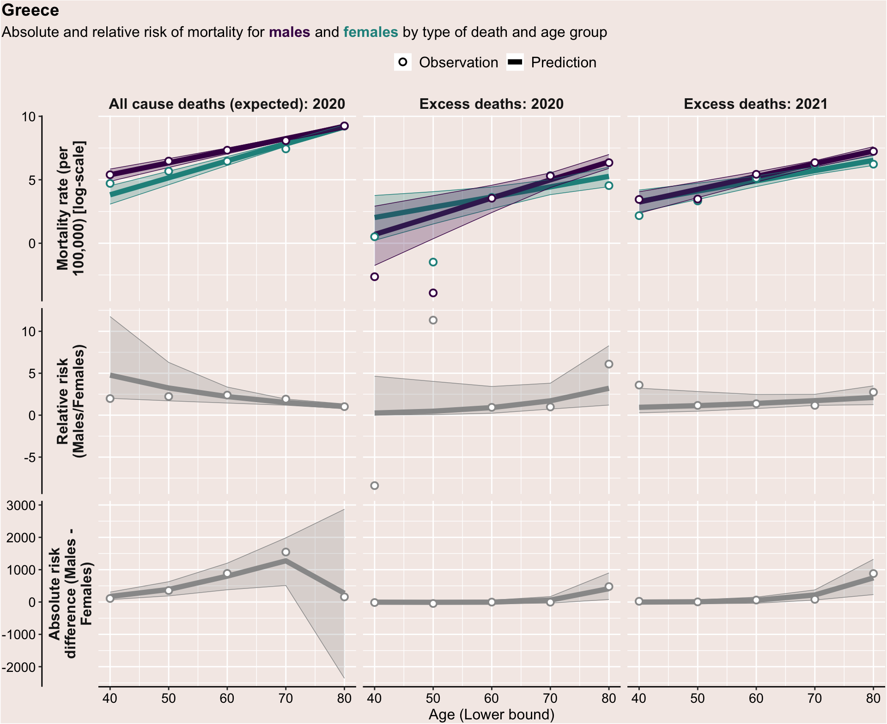
Croatia
- Total population: 4,105,268
- Total official COVID deaths in 2020 (Our World in Data): 3,860
- Total official COVID deaths in 2021 (Our World in Data): 8,633
- Total excess deaths in 2020 (WHO): 5,502
- Total excess deaths in 2021 (WHO): 11,676
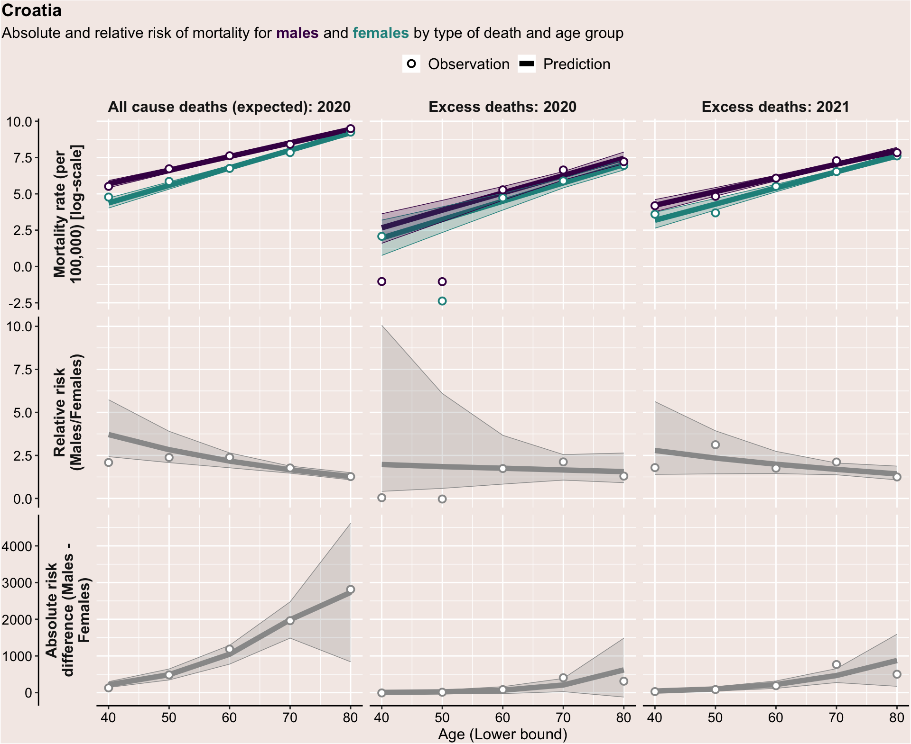
Hungary
- Total population: 9,660,350
- Total official COVID deaths in 2020 (Our World in Data): 9,537
- Total official COVID deaths in 2021 (Our World in Data): 29,649
- Total excess deaths in 2020 (WHO): 11,072
- Total excess deaths in 2021 (WHO): 25,427
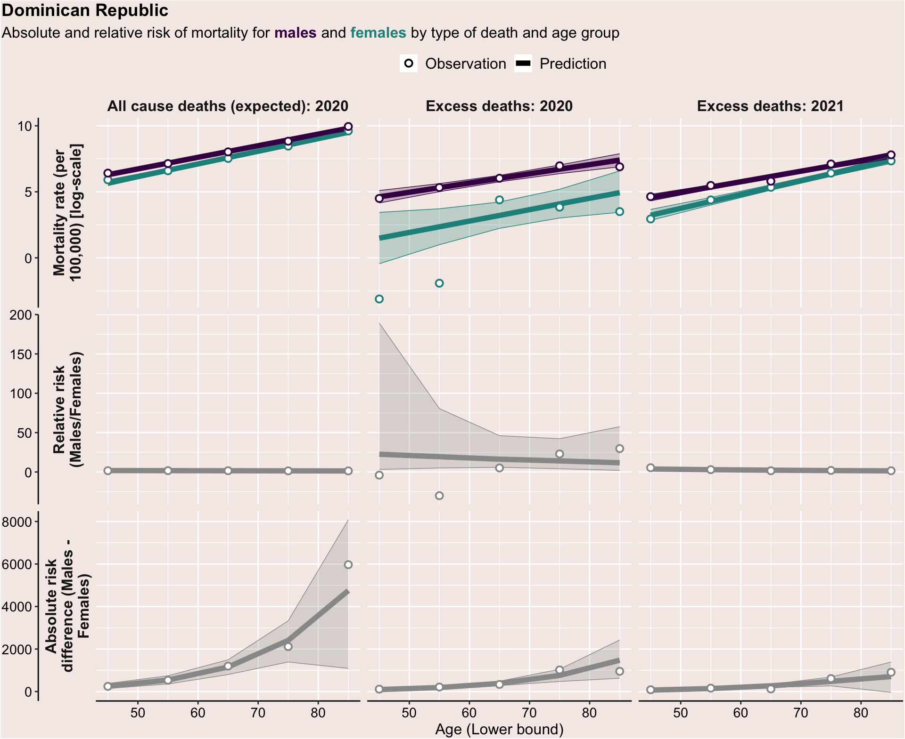
Ireland
- Total population: 4,937,796
- Total official COVID deaths in 2020 (Our World in Data): 2,264
- Total official COVID deaths in 2021 (Our World in Data): 3,824
- Total excess deaths in 2020 (WHO): 420
- Total excess deaths in 2021 (WHO):
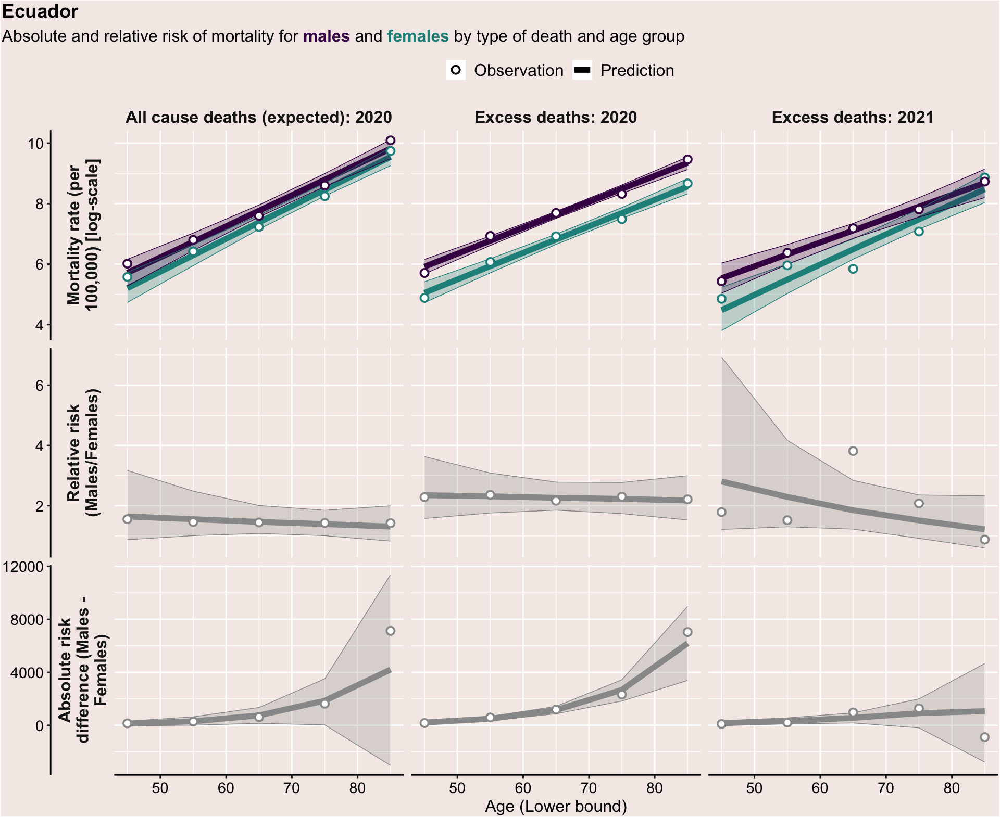
Iran (Islamic Republic of)
- Total population: 83,992,953
- Total official COVID deaths in 2020 (Our World in Data): 55,095
- Total official COVID deaths in 2021 (Our World in Data): 76,477
- Total excess deaths in 2020 (WHO): 108,918
- Total excess deaths in 2021 (WHO):
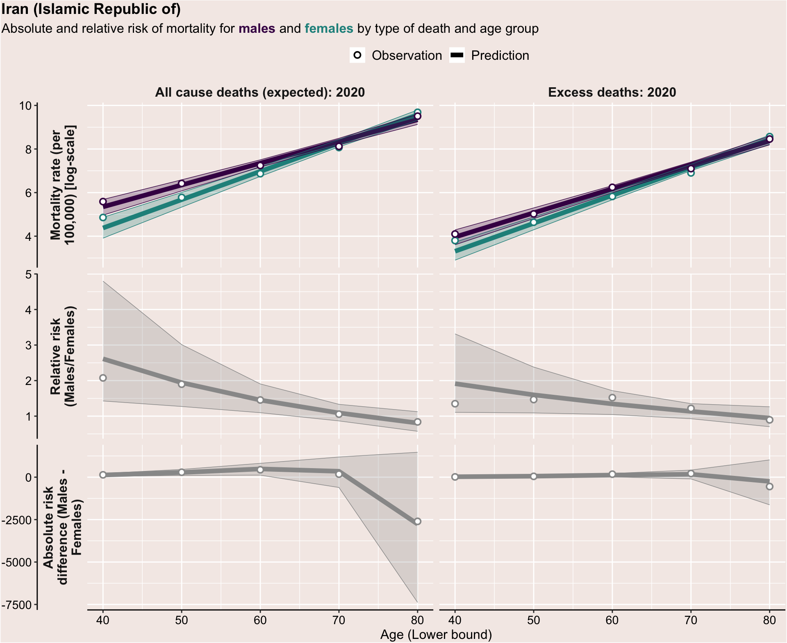
Iraq
- Total population: 40,222,503
- Total official COVID deaths in 2020 (Our World in Data): 12,808
- Total official COVID deaths in 2021 (Our World in Data): 11,346
- Total excess deaths in 2020 (WHO): 40,399
- Total excess deaths in 2021 (WHO):
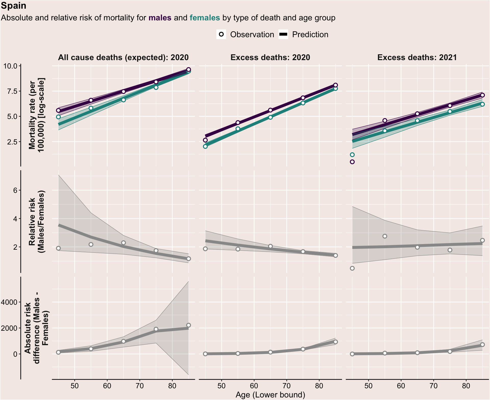
Israel
- Total population: 8,655,541
- Total official COVID deaths in 2020 (Our World in Data): 3,336
- Total official COVID deaths in 2021 (Our World in Data): 4,923
- Total excess deaths in 2020 (WHO): 2,434
- Total excess deaths in 2021 (WHO): 3,744

Italy
- Total population: 60,461,828
- Total official COVID deaths in 2020 (Our World in Data): 73,604
- Total official COVID deaths in 2021 (Our World in Data): 63,643
- Total excess deaths in 2020 (WHO): 100,432
- Total excess deaths in 2021 (WHO): 60,368
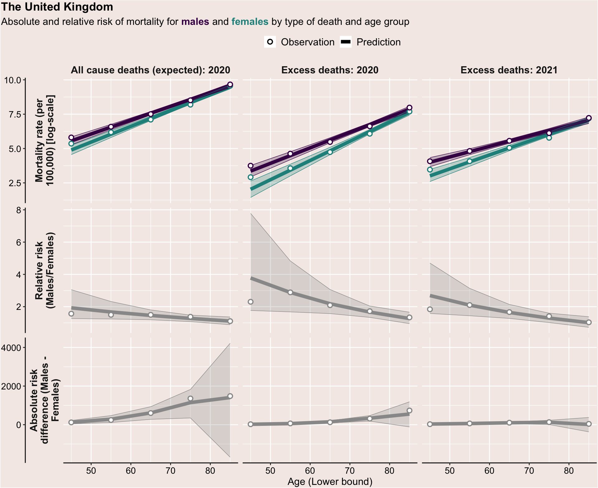
Japan
- Total population: 126,476,458
- Total official COVID deaths in 2020 (Our World in Data): 3,414
- Total official COVID deaths in 2021 (Our World in Data): 14,979
- Total excess deaths in 2020 (WHO): -30,138
- Total excess deaths in 2021 (WHO):

Kazakhstan
- Total population: 18,776,707
- Total official COVID deaths in 2020 (Our World in Data): 2,749
- Total official COVID deaths in 2021 (Our World in Data): 15,478
- Total excess deaths in 2020 (WHO): 28,493
- Total excess deaths in 2021 (WHO): 47,721
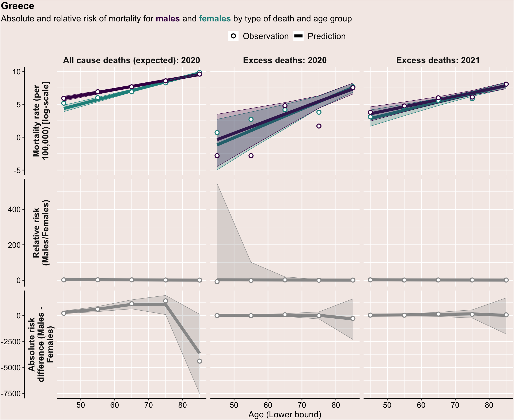
Mexico
- Total population: 128,932,753
- Total official COVID deaths in 2020 (Our World in Data): 147,623
- Total official COVID deaths in 2021 (Our World in Data): 156,199
- Total excess deaths in 2020 (WHO): 314,541
- Total excess deaths in 2021 (WHO):

Netherlands
- Total population: 17,134,873
- Total official COVID deaths in 2020 (Our World in Data): 11,296
- Total official COVID deaths in 2021 (Our World in Data): 9,589
- Total excess deaths in 2020 (WHO): 14,482
- Total excess deaths in 2021 (WHO): 14,731

Peru
- Total population: 32,971,846
- Total official COVID deaths in 2020 (Our World in Data): 93,066
- Total official COVID deaths in 2021 (Our World in Data): 109,518
- Total excess deaths in 2020 (WHO): 133,817
- Total excess deaths in 2021 (WHO):
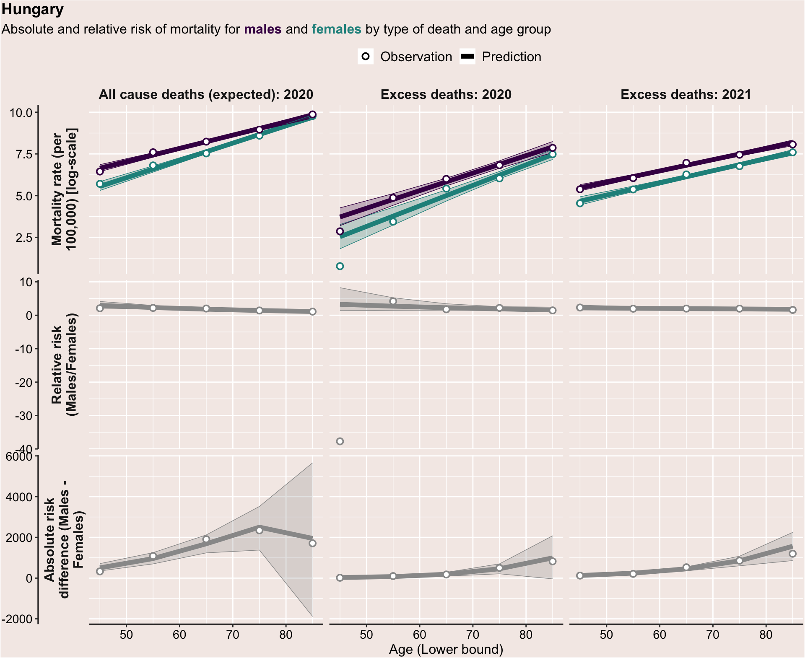
Poland
- Total population: 37,846,605
- Total official COVID deaths in 2020 (Our World in Data): 28,642
- Total official COVID deaths in 2021 (Our World in Data): 68,416
- Total excess deaths in 2020 (WHO): 60,687
- Total excess deaths in 2021 (WHO): 96,844
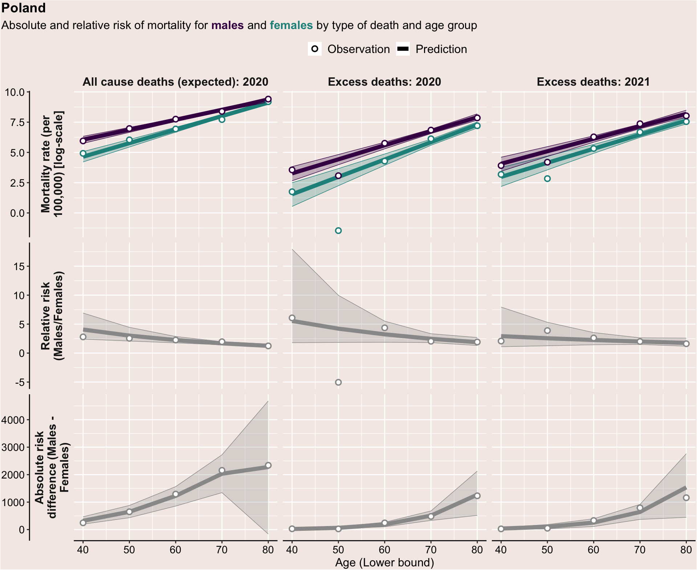
Romania
- Total population: 19,237,682
- Total official COVID deaths in 2020 (Our World in Data): 15,596
- Total official COVID deaths in 2021 (Our World in Data): 43,118
- Total excess deaths in 2020 (WHO): 34,995
- Total excess deaths in 2021 (WHO): 71,917

Russian Federation
- Total population: 145,934,460
- Total official COVID deaths in 2020 (Our World in Data): 57,019
- Total official COVID deaths in 2021 (Our World in Data): 251,841
- Total excess deaths in 2020 (WHO): 369,306
- Total excess deaths in 2021 (WHO):
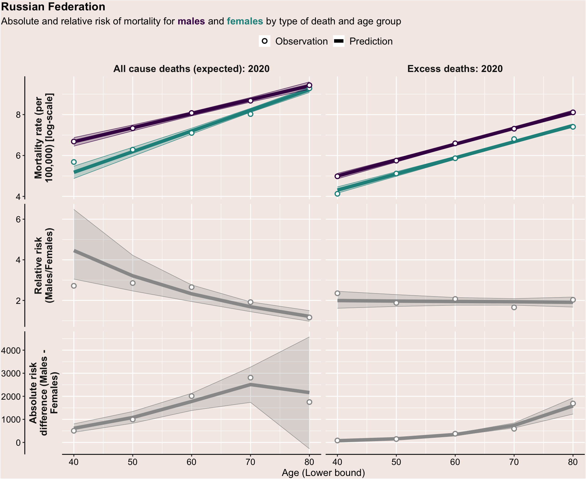
Serbia
- Total population: 8,737,370
- Total official COVID deaths in 2020 (Our World in Data): 3,163
- Total official COVID deaths in 2021 (Our World in Data): 9,525
- Total excess deaths in 2020 (WHO): 17,173
- Total excess deaths in 2021 (WHO): 38,470
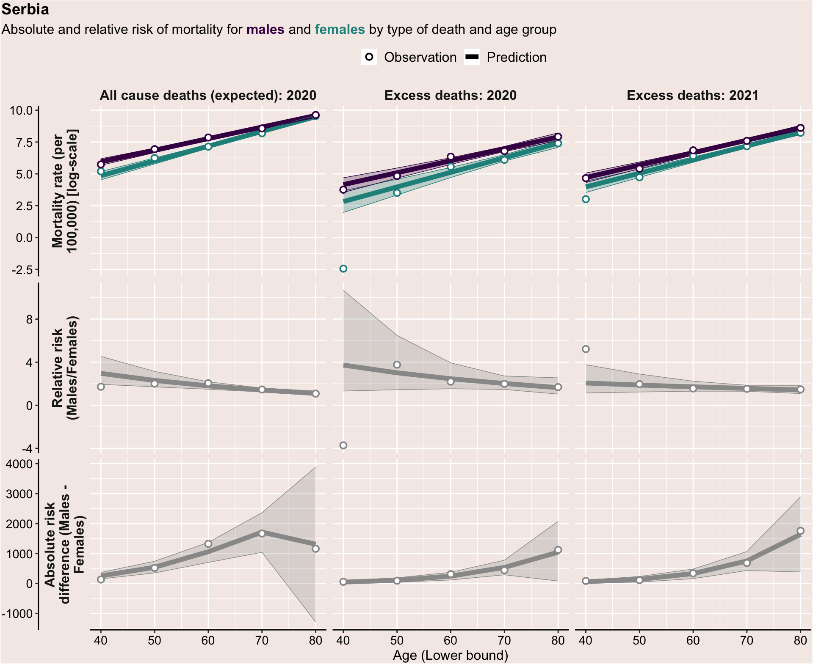
Slovakia
- Total population: 5,459,643
- Total official COVID deaths in 2020 (Our World in Data): 2,138
- Total official COVID deaths in 2021 (Our World in Data): 14,497
- Total excess deaths in 2020 (WHO): 5,463
- Total excess deaths in 2021 (WHO): 18,857
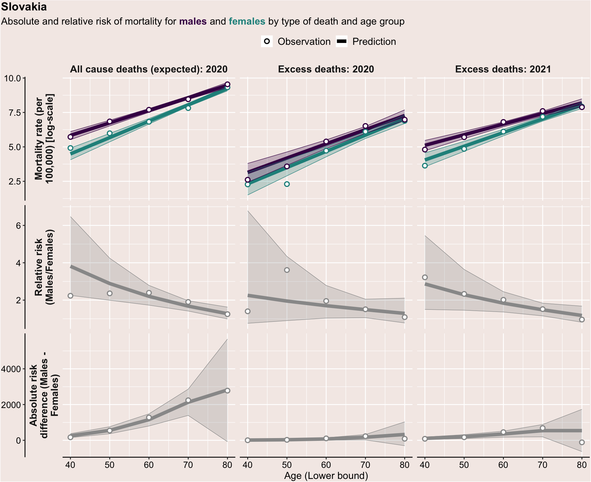
Slovenia
- Total population: 2,078,932
- Total official COVID deaths in 2020 (Our World in Data): 2,984
- Total official COVID deaths in 2021 (Our World in Data): 3,145
- Total excess deaths in 2020 (WHO): 3,346
- Total excess deaths in 2021 (WHO): 2,238
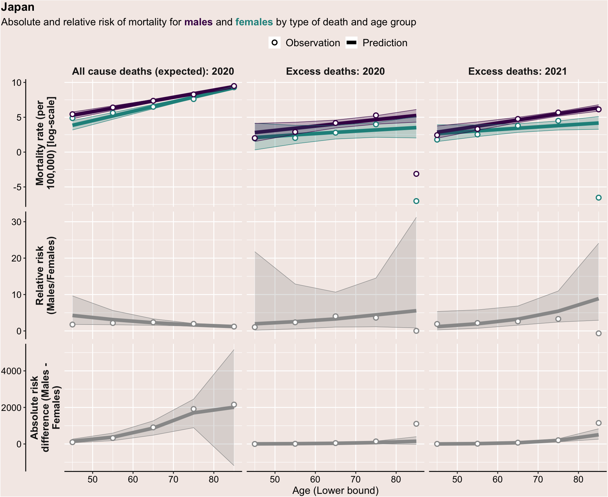
Sweden
- Total population: 10,099,270
- Total official COVID deaths in 2020 (Our World in Data): 9,616
- Total official COVID deaths in 2021 (Our World in Data): 5,719
- Total excess deaths in 2020 (WHO): 8,502
- Total excess deaths in 2021 (WHO): 2,751
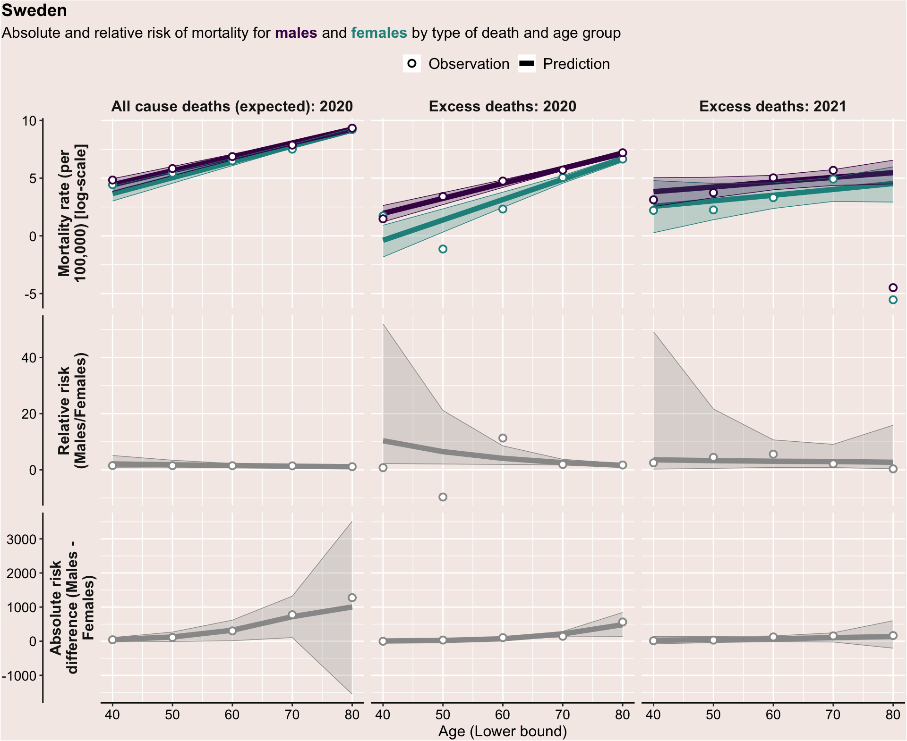
Ukraine
- Total population: 43,733,759
- Total official COVID deaths in 2020 (Our World in Data): 18,533
- Total official COVID deaths in 2021 (Our World in Data): 77,366
- Total excess deaths in 2020 (WHO): 45,366
- Total excess deaths in 2021 (WHO):
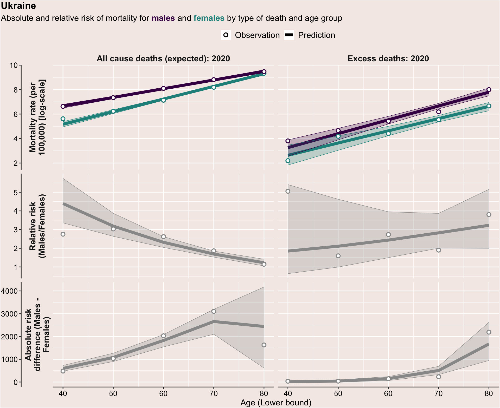
USA
- Total population: 331,002,647
- Total official COVID deaths in 2020 (Our World in Data): 352,004
- Total official COVID deaths in 2021 (Our World in Data): 467,051
- Total excess deaths in 2020 (WHO): 465,705
- Total excess deaths in 2021 (WHO): 466,755
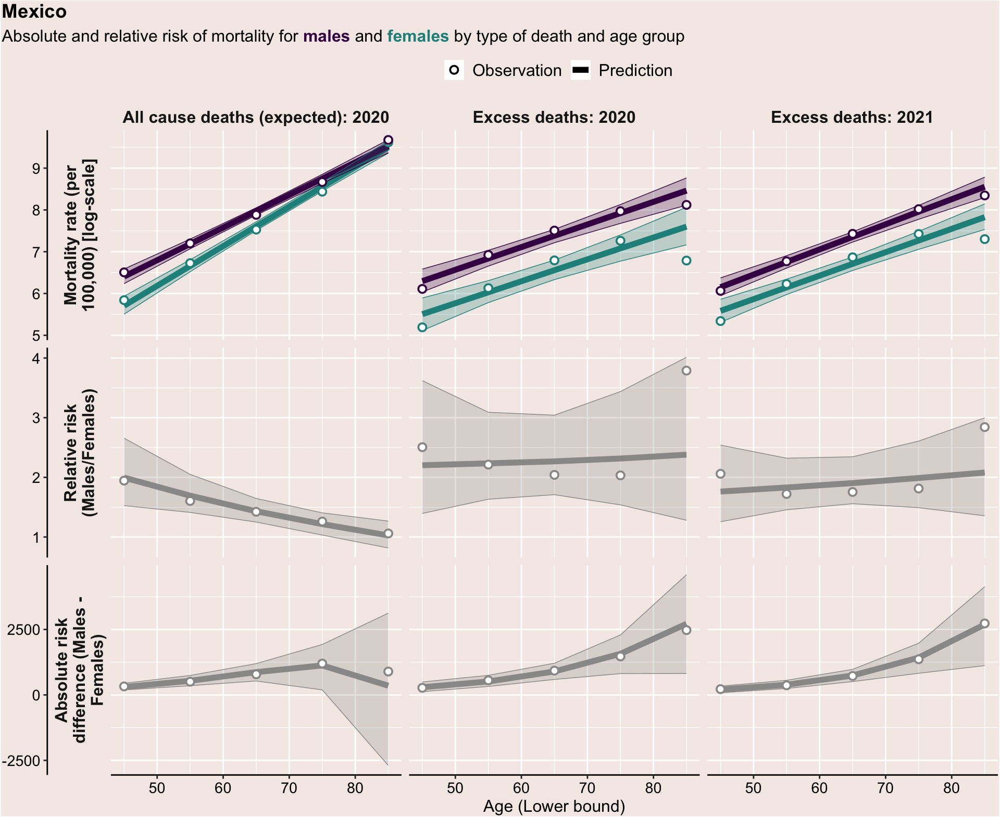
South Africa
- Total population: 59,308,690
- Total official COVID deaths in 2020 (Our World in Data): 28,033
- Total official COVID deaths in 2021 (Our World in Data): 63,028
- Total excess deaths in 2020 (WHO): 54,401
- Total excess deaths in 2021 (WHO):
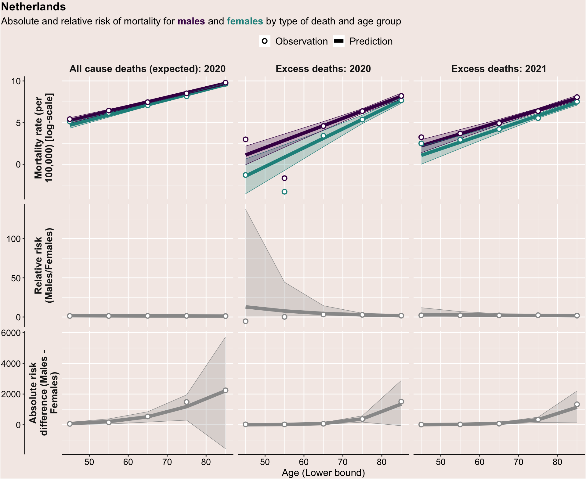